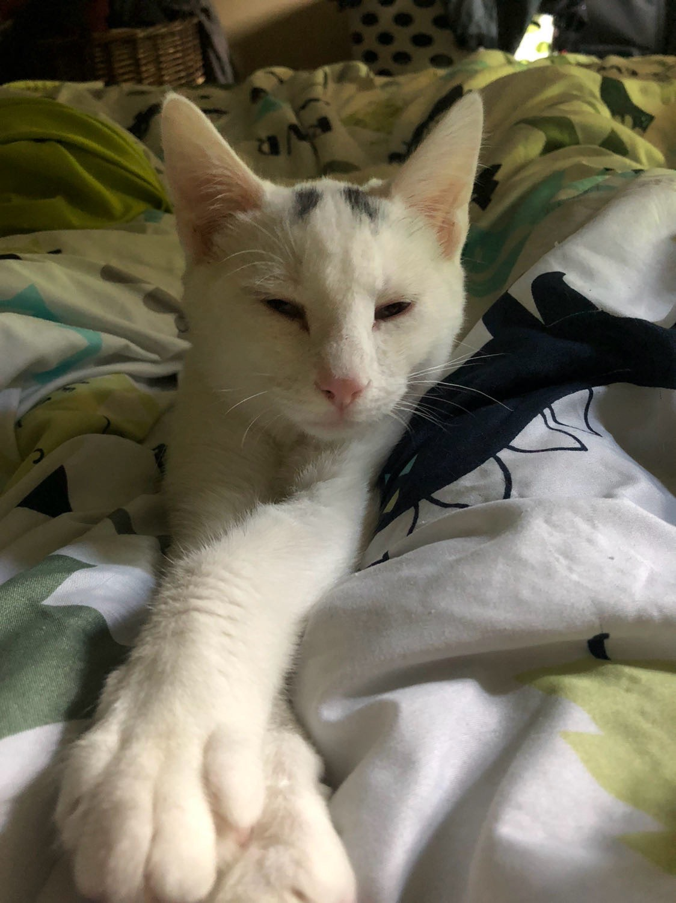
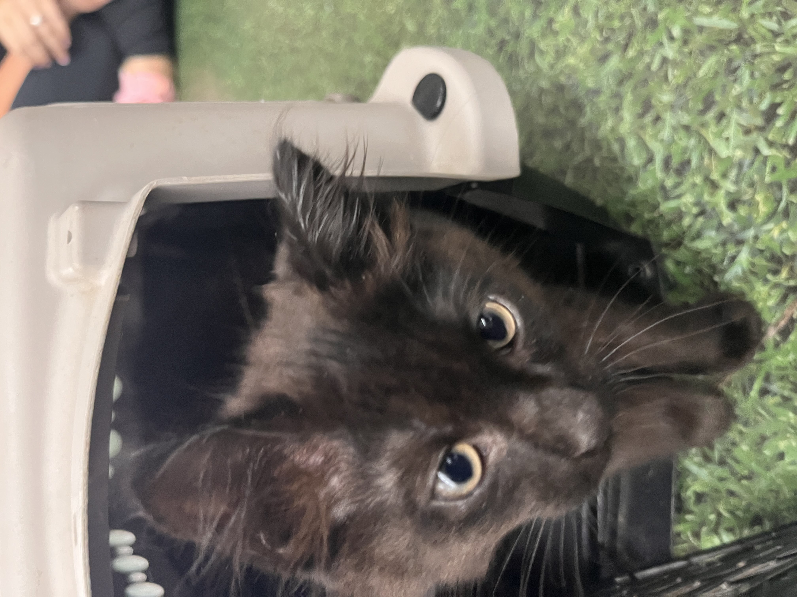
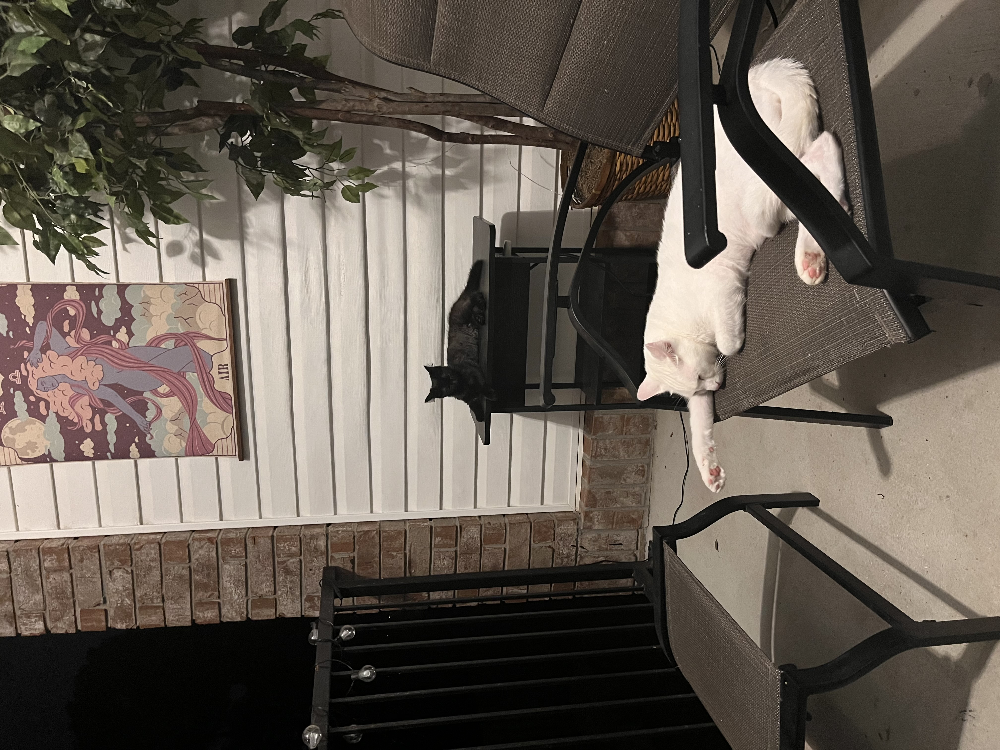
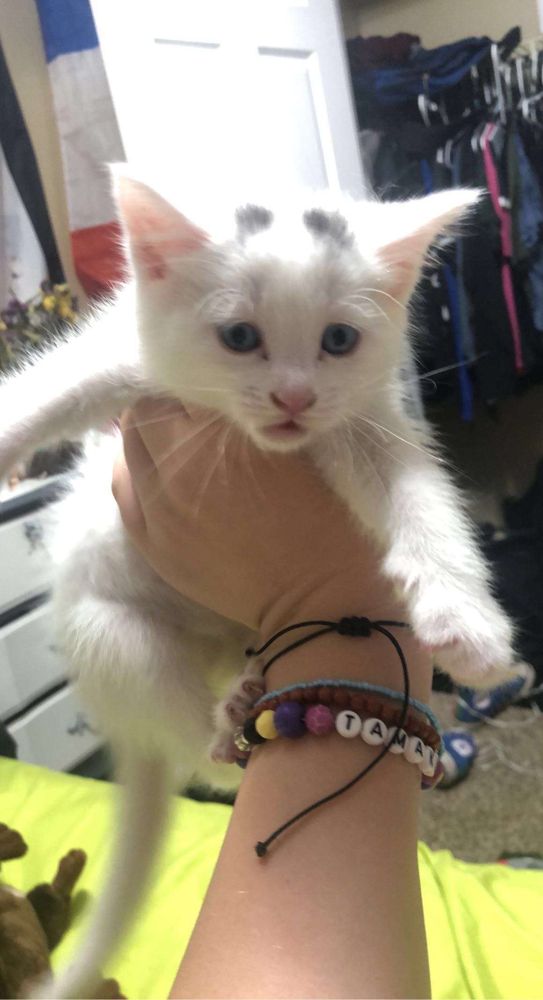
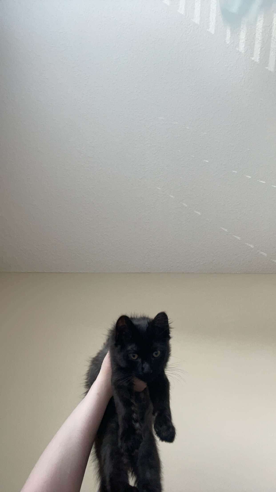

More Introductions!
Meet my mother's beloved babies
Hades and Ares
 About Hades and Ares
Ages: Hades is 3 years old and Ares is 5 months old
Breed: Hades is an American Shorthair and Ares is something mixed with Maincoone
Favorite Activities: They both love eating. Hades is a big fan of lounging around wherever he can and Ares, the kitten that he is, loves to play and annoy his older brother. They both enjoy sitting out on my mother's balcony and watching the birds.
Their Stories
While we still lived with our mother in Chattanooga we had two cats: Yzma and Gaston. Yzma ended up abandoning us in favor of being the apartment complex's collective cat. One day, my sister brought home a tiny white kitten and we all immediately fell in love. We decided to name him Hades.
In 2023, my mom moved from Chattanooga to Savannah, Georgia. We had to split the cats up, so I got Gaston and took him with me to my partner's house and she took Hades. My mom and Hades lived with my grandpa for about a year, before moving into an apartment themselves. Both Hades and my mom wanted company, so she went to the animal shelter and picked out a tiny black kitten. She named him Ares to match with Hades. She now has a purely white cat and a purely black cat, both named after greek gods.
 Their Personalities
Hades is very lazy and aloof. All he really does is lay around and wait to be fed. He also just likes to sit and observe things, without particulary participating in them.
Ares is a kitten so he is very very playful and has a lot of energy. He loves cuddling and attention and will stop at nothing to try and get cuddles and affection from you. This includes just laying on your face and on anything you are giving attention to that isn't him.
Fun Facts About Hades & Ares
- Hades' original brother was Gaston and he is very disappointed that he got replaced with Ares.
- Hades was born with black spots on his head that looked like horns which is why we named him Hades, but as he grew up they disappeared and he is now fully white.
- Ares once got locked in a room overnght with my sister and he pooped on her.
- Ares is most likely part Maincoone because of how fluffy his tail is.